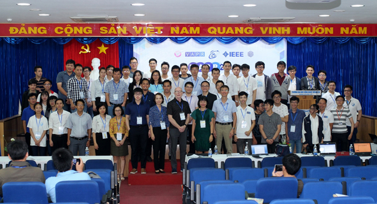

Tổng quan về Trường ĐH Công nghệ Thông tin
Trường Đại học Công nghệ Thông tin (ĐH CNTT), Đại học Quốc gia Thành phố Hồ Chí Minh (ĐHQG-HCM) là trường đại
học công lập đào tạo về công nghệ thông tin và truyền thông (CNTT&TT) được thành lập theo quyết định số
134/2006/QĐ-TTg ngày 08/06/2006 của Thủ tướng Chính phủ. Là trường thành viên của ĐHQG-HCM, trường ĐH
CNTT có nhiệm vụ đào tạo nguồn nhân lực công nghệ thông tin chất lượng cao, góp phần tích cực vào sự phát triển
của nền công nghiệp công nghệ thông tin Việt Nam, đồng thời tiến hành nghiên cứu khoa học và chuyển giao công
nghệ thông tin tiên tiến, đặc biệt là hướng vào các ứng dụng nhằm góp phần đẩy mạnh sự nghiệp công nghiệp hóa, hiện đại hóa đất nước.
Sau hơn 10 năm xây dựng và phát triển, hiện trường ĐH CNTT sở hữu cơ sở vật chất gồm khu học tập, nghiên cứu và
làm việc được đầu tư xây dựng khang trang, hiện đại với tổng diện tích trên 14 hecta trong khuôn viên khu đô thị
ĐHQG-HCM.
